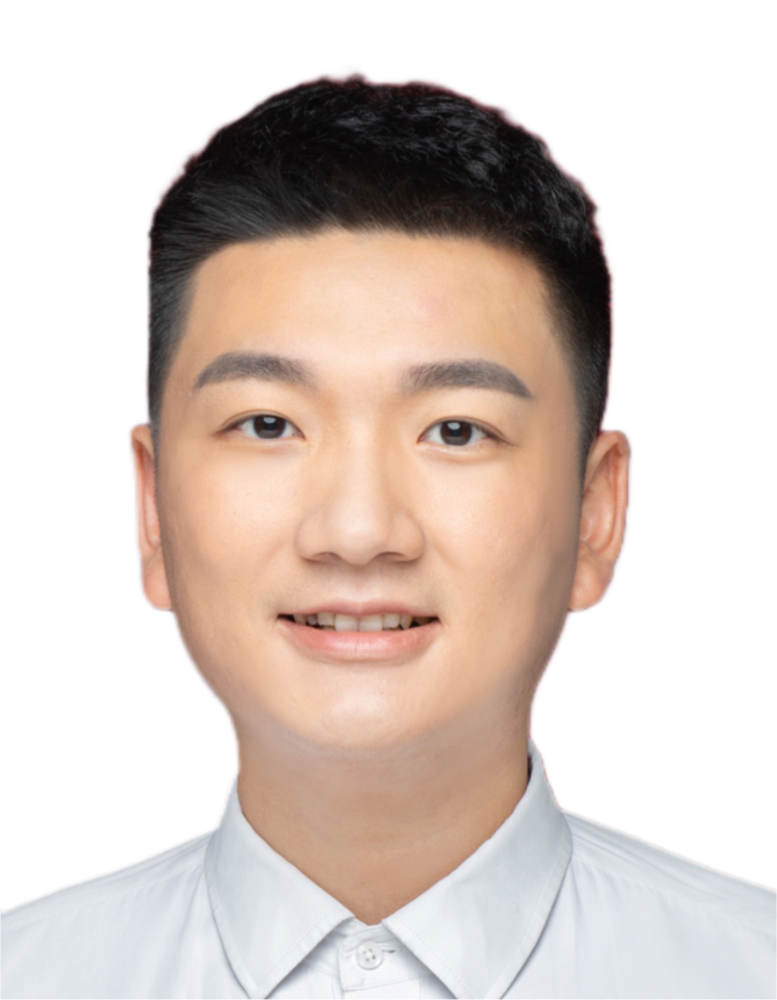

开放、严谨、彼此支持的跨学科研究团队。An open, rigorous and supportive interdisciplinary research team.
Principal Investigator

研究员 / 博士生导师Principal Investigator / PhD Supervisor
北京大学材料科学与工程学院研究员，研究聚焦光电材料、先进探测器件与智能化光电系统。Principal Investigator at the School of Materials Science and Engineering, Peking University.
Graduate Students